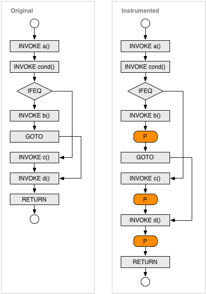
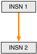
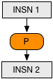
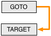
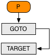
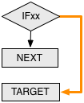
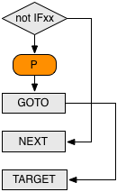
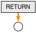
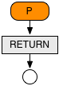

Control Flow Analysis for Java Methods
Implementing a coverage tool that supports statement (C0) as well as branch coverage coverage (C1) requires detailed analysis of the internal control flow of Java methods. Due to the architecture of JaCoCo this analysis happens on the bytecode of compiled class files. This document describes JaCoCo's strategies for inserting probes into the control flow at runtime and analyzing the actual code coverage. Marc R. Hoffmann, November 2011
Control Flow Graphs for Java Bytecode
As an starting point we take the following example method that contains a single branching point:
public static void example() {
a();
if (cond()) {
b();
} else {
c();
}
d();
}
A Java compiler will create the following bytecode from this example method.
Java bytecode is a linear sequence of instructions. Control flow is
implemented with jump instructions like the conditional
IFEQ or the unconditional GOTO opcode. The jump
targets are technically relative offsets to the target instruction. For better
readability we use symbolic labels (L1, L2) instead
(also the ASM API uses such symbolic labels):
public static example()V
INVOKESTATIC a()V
INVOKESTATIC cond()Z
IFEQ L1
INVOKESTATIC b()V
GOTO L2
L1: INVOKESTATIC c()V
L2: INVOKESTATIC d()V
RETURN
The possible control flow in the bytecode above can be represented by a graph. The nodes are byte code instruction, the edged of the graph represent the possible control flow between the instructions. The control flow of the example is shown in the left box of this diagram:
Flow Edges
The control flow graph of a Java method defined by Java byte code may have the following Edges. Each edge connects a source instruction with a target instruction. In some cases the source instruction or the target instruction does not exist (virtual edges for method entry and exit) or cannot be exactly specified (exception handlers).
| Type | Source | Target | Remarks |
| ENTRY | - | First instruction in method | |
| SEQUENCE | Instruction, except GOTO, xRETURN,
THROW, TABLESWITCH and LOOKUPSWITCH |
Subsequent instruction | |
| JUMP | GOTO, IFx, TABLESWITCH or
LOOKUPSWITCH instruction |
Target instruction | TABLESWITCH and LOOKUPSWITCH will define
multiple edges. |
| EXHANDLER | Any instruction in handler scope | Target instruction | |
| EXIT | xRETURN or THROW instruction |
- | |
| EXEXIT | Any instruction | - | Unhandled exception. |
The current JaCoCo implementation ignores edges caused by implicit exceptions and the the method entry. This means we consider SEQUENCE, JUMP, EXIT.
Probe Insertion Strategy
Probes are additional instructions that can be inserted between existing instructions. They do not change the behavior of the method but record the fact that they have been executed. One can think probes are placed on edges of the control flow graph. Theoretically we could insert a probe at every edge of the control flow graph. As a probe implementation itself requires multiple bytecode instructions this would increase the size of the class files several times and significantly slow down execution speed of the instrumented classes. Fortunately this is not required, in fact we only need a few probes per method depending on the control flow of the method. For example a method without any branches requires a single probe only. The reason for this is that starting from a certain probe we can back-trace the execution path and typically get coverage information for multiple instructions.
If a probe has been executed we know that the corresponding edge has been visited. From this edge we can conclude to other preceding nodes and edges:
- If a edge has been visited, we know that the source node of the this edge has been executed.
- If a node has been executed and the node is the target of only one edge we know that this edge has been visited.
Recursively applying these rules allows to determine the execution status of all instructions of a method – given that we have probes at the right positions. Therefore JaCoCo inserts probes
- at every method exit (return or throws) and
- at every edge where the target instruction is the target of more than one edge.
We recall that a probe is simply a small sequence of additional instructions that needs to be inserted at a control flow edge. The following table illustrates how this extra instructions are added in case of different edge types.
| Type | Before | After | Remarks |
| SEQUENCE |  |  | In case of a simple sequence the probe is simply inserted between the two instructions. |
| JUMP (unconditional) |  |  | As an unconditional jump is executed in any case, we can also insert the probe just before the GOTO instruction. |
| JUMP (conditional) |  |  |
Adding a probe to an conditional jump is little bit more tricky. We
invert the semantic of the opcode and add the probe right after the
conditional jump. With a subsequent GOTO instruction we
jump to the original target. Note that this approach will not introduce
a backward jump, which would cause trouble with the Java verifier if we
have an uninitialized object on the stack.
|
| EXIT |  |  | As is is the nature of RETURN and THROW statements to actually leave the method we add the probe right before these statements. |
Now let's see how this rules apply to the example snippet above. We see that
INVOKE d() instruction is the only node with more than one
incoming edge. So we need to place probes on those edges and another probe on
the only exit node. The result is shown the the right box of the diagram
above.
Additional Probes Between Lines
The probe insertion strategy described so far does not consider implicit
exceptions thrown for example from invoked methods. If the control flow
between two probes is interrupted by a exception not explicitly created with
a throw statement all instruction in between are considered as
not covered. This leads to unexpected results especially when the the block of
instructions spans multiple lines of source code.
Therefore JaCoCo adds an additional probe between the instructions of two
lines whenever the subsequent line contains at least one method invocation.
This limits the effect of implicit exceptions from method invocations to
single lines of source. The approach only works for class files compiled with
debug information (line numbers) and does not consider implicit exceptions
from other instructions than method invocations (e.g.
NullPointerException or ArrayIndexOutOfBoundsException).
Probe Implementation
Code coverage analysis is a runtime metric that provides execution details of the software under test. This requires detailed recording about the instructions (instruction coverage) that have been executed. For branch coverage also the outcome of decisions has to be recorded. In any case execution data is collected by so called probes:
A probe is a sequence of bytecode instructions that can be inserted into a Java method. When the probe is executed, this fact is recorded and can be reported by the coverage runtime. The probe must not change the behavior of the original code.
The only purpose of the probe is to record that it has been executed at least once. The probe does not record the number of times it has been called or collect any timing information. The latter is out of scope for code coverage analysis and more in the objective of a performance analysis tool. Typically multiple probes needs to be inserted into each method, therefore probes needs to be identified. Also the probe implementation and the storage mechanism it depends on needs to be thread safe as multi-threaded execution is a common scenario for java applications (albeit not for plain unit tests). Probes must not have any side effects on the original code of the method. Also they should add minimal overhead.
So to summarize the requirements for execution probes:
- Record execution
- Identification for different probes
- Thread safe
- No side effects on application code
- Minimal runtime overhead
JaCoCo implements probes with a boolean[] array instance per
class. Each probe corresponds to a entry in this array. Whenever the probe is
executed the entry is set to true with the following four
bytecode instructions:
ALOAD probearray xPUSH probeid ICONST_1 BASTORE
Note that this probe code is thread safe and does not modify the operand stack
or modify local variables. It does also not leave the
method through an external call. The only prerequisite is that the probe array
is available as a local variable. For this at the beginning of each method
additional instrumentation code needs to be added to obtain the array instance
associated with the belonging class. To avoid code duplication the
initialization is delegated to a static private method
$jacocoinit() which is added to every non-interface class.
The size of the probe code above depends on the position of the probe array variable and the value of the probe identifier as different opcodes can be used. As calculated in the table below the overhead per probe ranges between 4 and 7 bytes of additional bytecode:
| Possible Opcodes | Min. Size [bytes] | Max. Size [bytes] |
| Total: | 4 | 7 |
ALOAD_x, ALOAD 1 |
1 | 2 |
ICONST_x, BIPUSH, SIPUSH, LDC, LDC_W 2 |
1 | 3 |
ICONST_1 |
1 | 1 |
BASTORE |
1 | 1 |
1 The probe array is the first variable after the arguments.
If the method arguments do not consume more that 3 slots the 1-byte opcode can
be used.
2 1-byte opcodes for ids 0 to 5, 2-byte opcode for ids up to 127,
3-byte opcode for ids up to 32767. Ids values of 32768 or more require an
additional constant pool entry. For normal class files it is very unlikely to
require more than 32,000 probes.
Performance
The control flow analysis and probe insertion strategy described in this document allows to efficiently record instruction and branch coverage. In total classes instrumented with JaCoCo increase their size by about 30%. Due to the fact that probe execution does not require any method calls, only local instructions, the observed execution time overhead for instrumented applications typically is less than 10%.
References
- ASM byte code library by Eric Bruneton at al.
- Bytecode Outline Plug-In by Andrei Loskutov
- Wikipedia: Glossary of Graph Theory